Daniel Krasnokucki - Platforma .NET
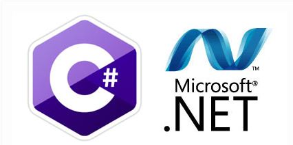
DZIEŃ DOBRY!
AGENDA ogólna - część 2
- ANKIETA
- GIT
- HTML, CSS, JS
- SQL
- Wzorce architektoniczne
- .Net Core MVC
- Entity Framework
Technologie w programowaniu
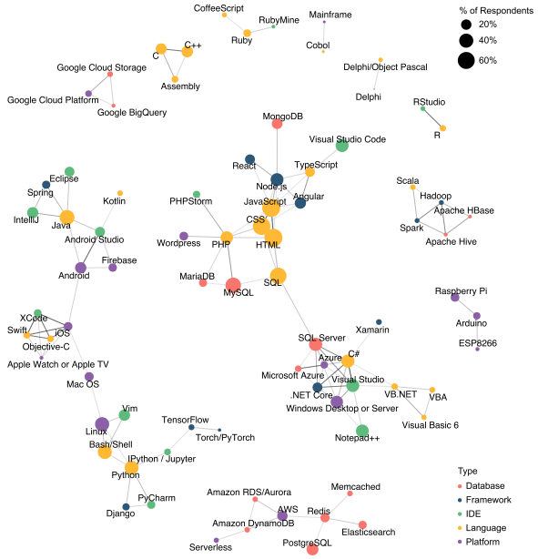Źródło: Stack Overflow
GIT
GIT - dlaczego...

Słownik
branch - odgałęzienie.
commit - stan projektu (migawka) w danej chwili.
indeks (staging area) - poczekalnia. Trzyma zmiany, które zostaną zacommitowane do nowej wersji
HEAD - wskaźnik do gałęzi, w której się obecnie znajdujesz
Słownik
katalog roboczy (working directory) - katalog, w którym dokonujemy zmian
master - zwyczajowa nazwa głównego odgałęzienia
merge - scalanie/łączenie plików lub gałęzi w jedną
obiekt - coś, co jest w repozytorium (obiektami są: blob, drzewo, commit, tag)
Słownik
origin - zwyczajowa nazwa głównego repozytorium
nazwa - nazwa obiektu, dwudziestocyfrowy skrót SHA-1 dla danego obiektu
ORIG_HEAD - wskaźnik do obecnej gałęzi repozytorium zdalnego
ref - referencja, wskaźnik na commit (może to być gałąź, tag, etc.)
Słownik
repozytorium - struktura danych, zawierająca historię projektu
repozytorium lokalne - miejsce przechowywania zacommitowanych plików
repozytorium zdalne - wersja projektu utrzymywana na serwerze
revision - rewizja, kolejna wersja plików w repozytorium.
tag - zrozumiała dla człowieka nazwa obiektu wraz z informacją o osobie tagującej.
GIT -zasada działania
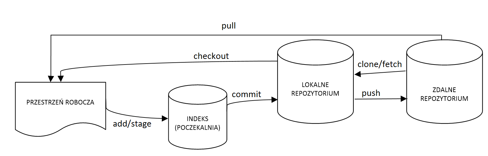Źródło: Tablice GIT - Helion
GIT - rozszerzenie
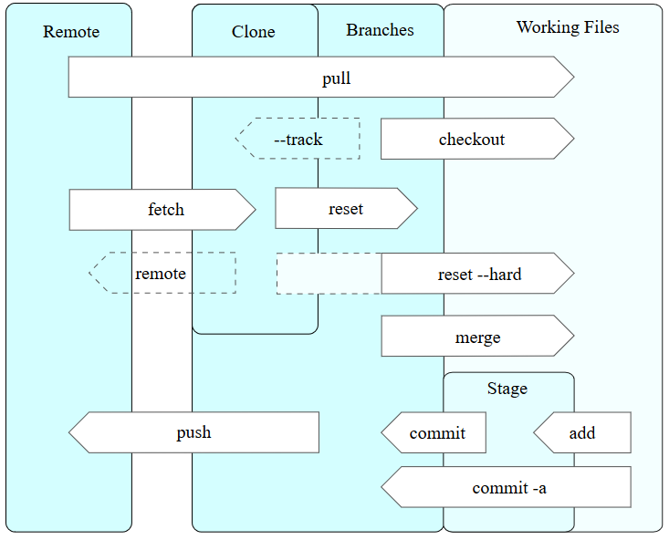Podstawowy sposób pracy z Git wygląda mniej więcej tak:
- Dokonujesz modyfikacji plików w katalogu roboczym.
- Oznaczasz zmodyfikowane pliki jako śledzone, dodając ich bieżący stan (migawkę) do przechowalni.
- Dokonujesz zatwierdzenia (commit), podczas którego zawartość plików z przechowalni zapisywana jest jako migawka projektu w katalogu Git.
Najważniejsze polecenia
--help - wyświetlenie pomocy dla dowolnego polecenia
git config --help
Najważniejsze polecenia
git status - wyświetla informację o tym, które zmiany w katalogu roboczym zostały zapisane w indeksie, a które nie 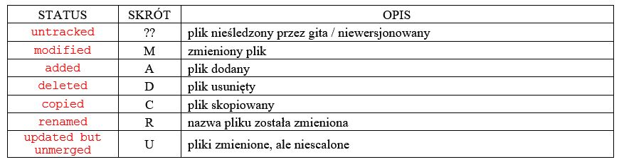Zmiana statusów pliku

.gitignore
W pliku .gitignore podajemy pliki lub wzorzec dla plików, które chcemy pomijać przy dodawaniu do repozytorium. Można go utworzyć w dowolnym katalogu i będzie miał on zastosowanie do katalogu, w którym jest umieszczony oraz wszystkich jego podkatalogów.
Inicjowanie repozytorium
git status - wyświetla informację o tym, które zmiany w katalogu roboczym zostały zapisane w indeksie, a które nie 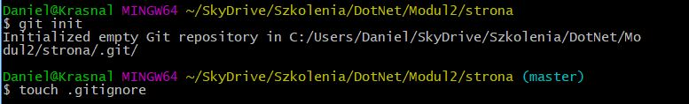Prosta strona HTML
ZADANIE
Tytuł strony!
Nagłówek
Jakieś wiadomości
Dodawanie odwołań do plików
Tytuł strony
MENU
CSS
ul {
list-style: none;
float: left;
}
ul > li {
margin: 0;
padding: 0;
float: left;
position: relative;
height: 30px;
}
ul > li > a {
padding: 10px;
color: grey;
text-decoration: none;
}
ul > li > a:hover,
ul > li:hover > a {
color: #de5f44;
text-decoration: underline;
}
ul > li ul {
padding: 0;
position: absolute;
display: none;
left: 0px;
top: 30px;
width: 200px;
text-align: left;
background-color: #fcfcfc;
border: 1px solid #ccc;
}
ul li:hover > ul {
display: block;
}
ul > li ul ul {
left: 200px;
top: -1px;
}
ul > li ul li {
margin: 0;
padding: 0;
position: relative;
float: none;
height: auto;
}
ul > li ul li a {
padding: 10px 20px;
color: #202020;
text-decoration: none;
display: block;
}
ul > li ul li a:hover,
ul > li ul li:hover > a {
text-decoration: none;
color: #fff;
background-color: #f26c4f;
}
SQL
Relacyjne Bazy danych
Relacyjna baza danych to opisany i zorganizowany zbiór tabel połączonych relacjami – związkami między sobą.
Ten sposób przechowywania informacji pozwala na uniknięcie redundancji (powtarzania się danych) oraz przeprowadzanie analiz na podstawie wielu tabel.
Każda tabela składa się z rekordów (tak nazywamy pojedyncze wiersze).
Poszczególne rekordy składają się z pól (komórek), przechowujących jedną daną.
Relacja 1 do 1
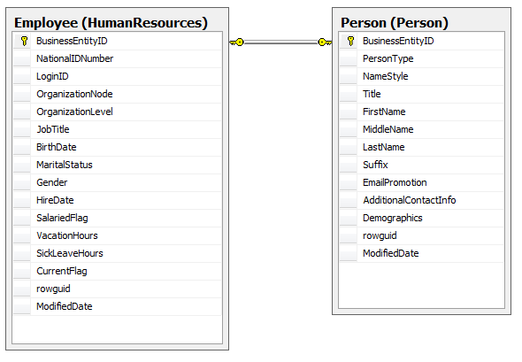Podstawowe operacje

Nasza baza
morfeusz.wszib.edu.plSQL
ZADANIA
SQL - zadania - NORTHWIND
- Wyświetl wszystkich pracowników w formacie: Nazwisko, Imię, Stanowisko.
- Znajdź dane firmy o nazwie „Alfreds Futterkiste”
- Znajdź dostawców czekolady.
- Zrób raport sprzedaży za 1996 rok.
- Wyświetl liczbę pracowników.
- Wyświetl aktualną listę produktów.
- Pokaż wszystkich pracowników których nazwiska zaczynają się na literę D.
ASP .NET Core MVC
.NET

Źródło: MSDN
Architektura trójwarstwowa
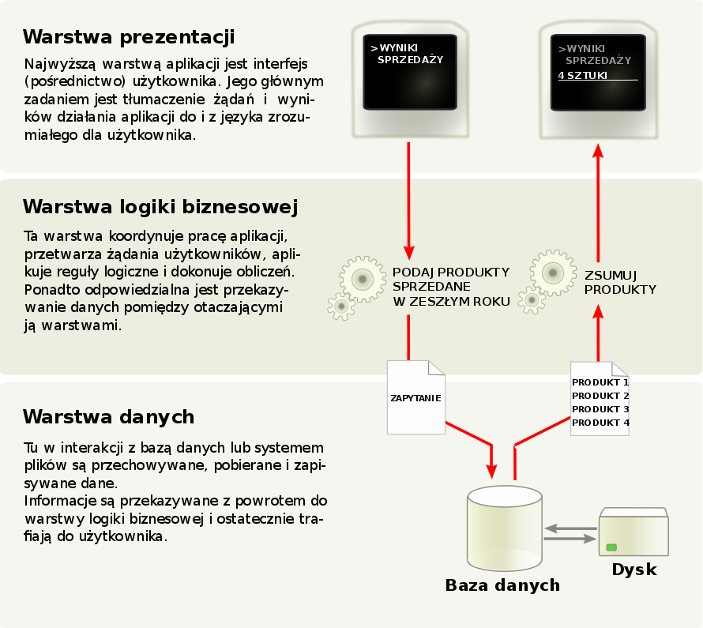Wzorce architektoniczne - MVC, MVP, MVVM
- Model
- Widok
- Model widoku
- Prezenter
Wzorce architektoniczne - MVP
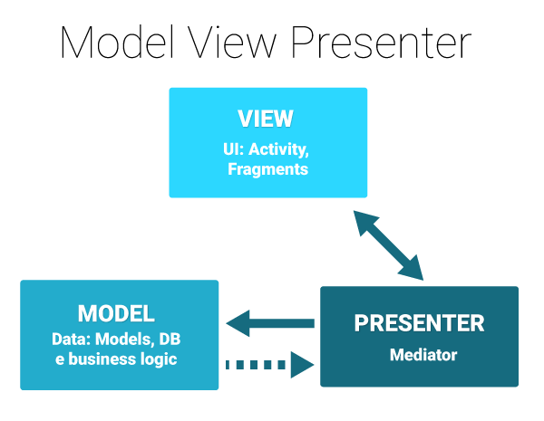Wzorce architektoniczne - MVP
- Widok obsługuje interakcję użytkownika …
- … po czym wywołuje odpowiednią funkcję na interfejsie prezentera
- Prezenter aktualizuje model
- Prezenter wywołuje funkcję na interfejsie widoku, przekazując potrzebne informacje lub dane
Wzorce architektoniczne - MVVM
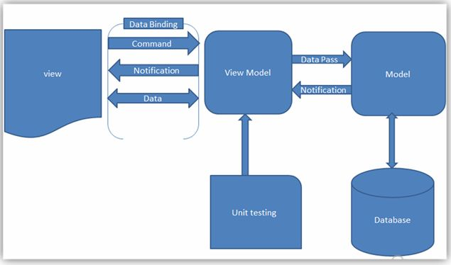MVVM - Model
Tutaj przechowywany jest kod z logiką biznesową. Tutaj dane są pobierane i przetwarzane.MVVM - Widok
To, co będzie wyświetlane - widok. W przypadku np. WPF to po prostu kod *.xaml. Nie powinna znajdować się tutaj żadna logika aplikacji.MVVM - Model widoku (View Model)
Tutaj umieszczamy wszystko co znajdowało się do tej pory w code-behind. Jest to pośrednik pomiędzy Modelem, a View. W istocie ViewModel jest czymś, co wystawia dane dla naszego View, poprzez właściwości.Wzorce architektoniczne - MVC
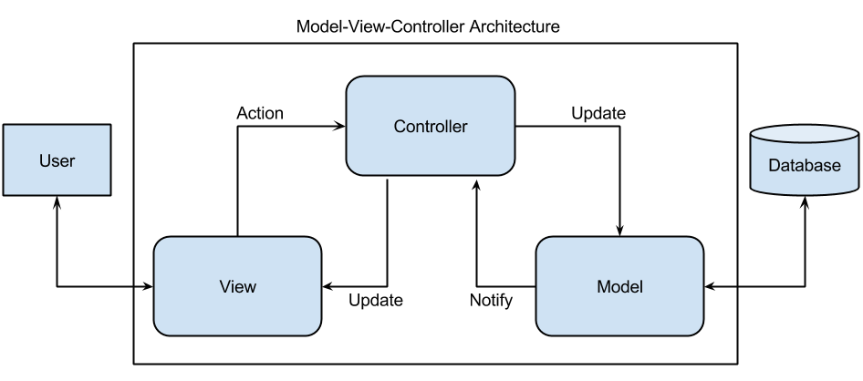Wzorce architektoniczne - MVC
- Użytkownik wchodzi w interakcję z aplikacją, co zostaje wychwycone przez kontroler.
- Kontroler zleca modelowi zaktualizowanie danych (na przykład zapis do lokalnej bazy, lub pobranie informacji z sieci).
- Kontroler zleca aktualizację widoku.
- Widok pobiera z modelu najświeższe dane.
Wzorce architektoniczne - podsumowanie

Przykłady - MVC, MVP, MVVM
- MVP - Windows Forms
- MVVM - WPF
- MVC - ASP .NET
ASP .NET Core MVC
ASP .NET (Active Server Pages.NET)
PRZYKŁAD
ORM
Object-Relational Mapping Mapowanie (odwzorowanie) obiektowo relacyjneSposób odwzorowania obiektowej architektury systemu informatycznego na bazę danych (lub inny element systemu) o relacyjnym charakterze.
Implementacja takiego odwzorowania stosowana jest m.in. w przypadku, gdy tworzony system oparty jest na podejściu obiektowym, a system bazy danych operuje na relacjach.
Entity Framework
EF pozwala nam na pisanie obiektów POCO (Plain Old CLR Object) dla naszych modeli a następnie na przechowywanie ich w bazie danych za pomocą definicji klasy DbContext. Po co?
- możliwość wsparcia projektowego Domain Driven Design;
- możliwość szybszego rozpoczęcia procesu tworzenia kodu (bez konieczności czekania na gotową bazę danych);
- klasy modeli są dużo czytelniejsze ponieważ nie zawierają logiki związanej z przechowywaniem modeli w bazie danych;
- warstwa przechowywania danych może być zmieniona bez żadnego wpływu na istniejące modele.
Plain Old CLR Object (POCO)
odpowiednik występującego na platformie Java EE terminu POJO używany przez programistów tworzących kod w środowisku Common Language Runtime platformy .NET.
Podobnie jak w Javie, termin ten oznacza prosty obiekt nieobciążony dziedziczeniem, praktycznie niezawierający logiki biznesowej
POCO odseparowuje nas od konieczności używania jednego narzędzia ORM. Dzięki temu mamy możliwość użycia innych maperów do tworzenia naszych klas. Przekłada się to również na większą re-używalność stworzonego kodu. Innym aspektem jest testowanie. Testowanie POCO jest łatwiejsze, gdyż nie ma zbędnych powiązań pomiędzy klasami.
Entity Framework - zastosowania

Entity Framework
dostarcza trzy różne podejścia do odwzorowywania encji modelu domeny na relacyjne obiekty bazy danych:
- database-first: zaczynamy od utworzenia bazy danych, a EF automatycznie generuje klasy modelu na podstawie struktury bazy danych
- model-first: zaczynamy od utworzenia klas modelu w dedykowanym designerze i mapujemy je na istniejącą bazę danych lub EF generuje bazę na podstawie stworzonego modelu
- code-first: zaczynamy od utworzenia klas modelu wprost w kodzie i mapujemy na obiekty bazy danych.
Entity Framework Core - 2 podejścia
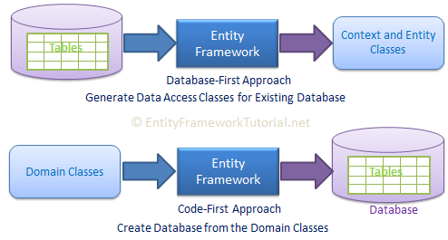Powtórka ASP .NET Core MVC
Podłączenie Entity Framework
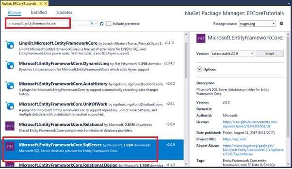Kontekst
public class FilmContext : DbContext
{
public FilmContext(DbContextOptions options) : base(options)
{
}
public DbSet Filmy { get; set; }
}
Rejestracja Kontekstu --> Startup.cs
services.AddDbContext(options =>
options.UseSqlServer(Configuration.GetConnectionString("DefaultConnection")));
Connection String --> appsettings.json
"ConnectionString": {
"DefaultConnection": "server=MY_SERVER;database=MovieDB;User ID=MY_USER;password=MY_PASSWORD;"
}
Package Manager console
Add-Migration EFCoreCodeFirstSample.Models.EmployeeContext
------
update-database
------
Architektura trójwarstwowa
Wzorce architektoniczne - MVC, MVP, MVVM
- Model
- Widok
- Model widoku
- Prezenter
- Controller
Wzorce architektoniczne - MVC
- Użytkownik wchodzi w interakcję z aplikacją, co zostaje wychwycone przez kontroler.
- Kontroler zleca modelowi zaktualizowanie danych (na przykład zapis do lokalnej bazy, lub pobranie informacji z sieci).
- Kontroler zleca aktualizację widoku.
- Widok pobiera z modelu najświeższe dane.
Wzorce architektoniczne - MVC
Nowy projekt

Nowy projekt

Tworzenie Modelu

Scaffolding
"Rusztowanie / szkielt"
Szybkie i proste generowanie obiektów/kodu na pdostawie dostępnych danych w celu późniejszej modyfikacji
Tworzenie Kontrolera
Controllers -> Add -> New Scaffolded Item
Łączenie Modelu i Kontrollera

Widoki